| 日付 | 2014年12月28日（日） - 2014年12月31日（水） | ||
|---|---|---|---|
| 山域 | 四国の山 | ||
| メンバー | 家族（妻、長女・3歳、長男・1歳） | ||
| 山行形態 | 子連れ3泊4日ホテル泊 | ||
| アクセス | 車、船 | ||
| ルート (Map) |
|
4日目
昨日買ったパンを食べて7時半にホテルを出発する。
素泊まりは朝早くから行動できるのが良い。
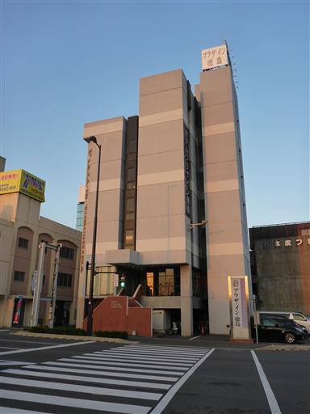
本日は鳴門の渦潮を見学する予定。鳴門に向かう。
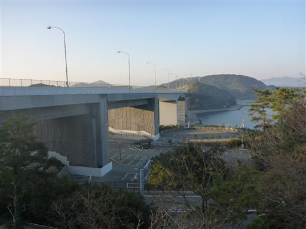
渦潮の見頃は8:30なのに、渦の道という展望台の開館は9:00…
この辺りは柔軟に対処できないものなのだろうか？
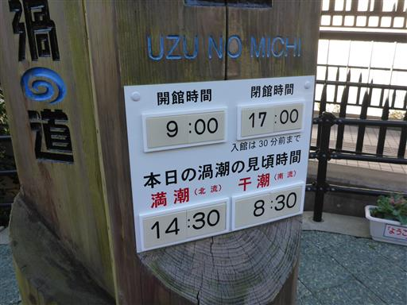
少し早く着きすぎたため、近くにある千畳敷で時間をつぶす。
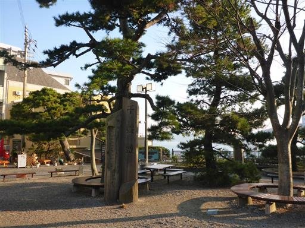
目の前に見えるのは大鳴門橋。美しい吊橋だ。
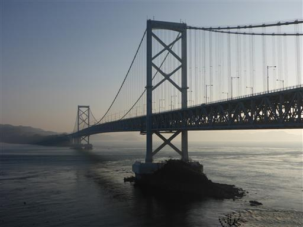
対岸の淡路島にある風車が良く見えている。
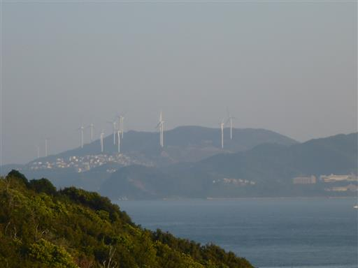
柵は渦潮の模様だ。
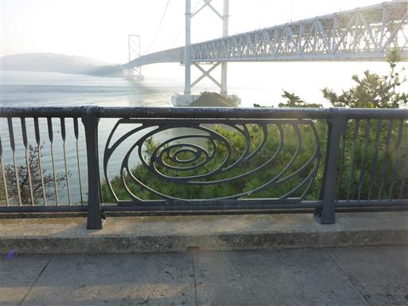
チケット売場の場所を確認するため、一人で付近を少し調査する。
小さな山があったので、調査がてらに登ってみる。
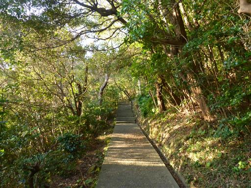
登った先にあったのは鳴門山展望台。
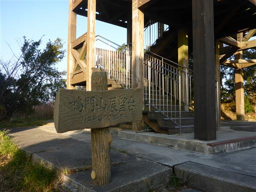
大鳴門橋を上から見下ろす。
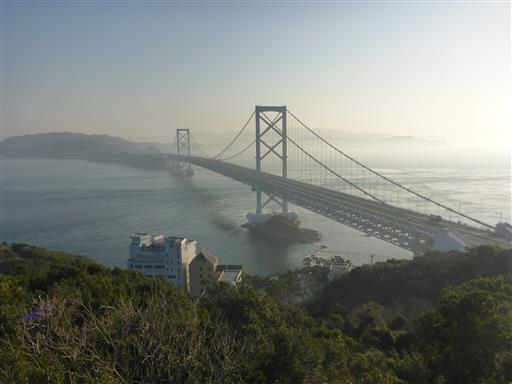
こちらは島田島方面。青い海が美しい。
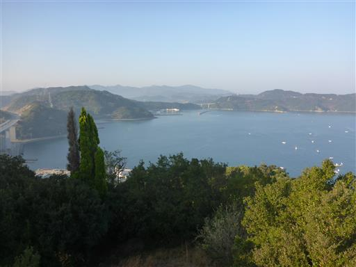
すぐ側にはエスカレーターで登れる有料の展望台がある。
展望はここと大して変わらないと思う。歩けば無料だ。
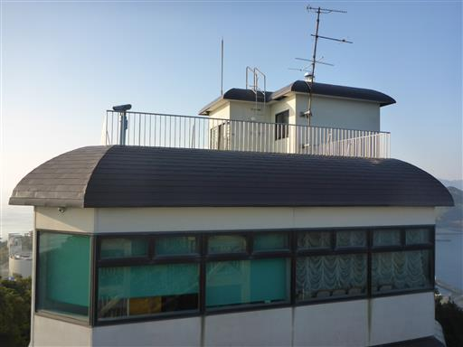
千畳敷に戻ってくる。潮の流れはだいぶ速くなっている。
渦の道に向かっている人がいるため、我々もそちらに向かう。
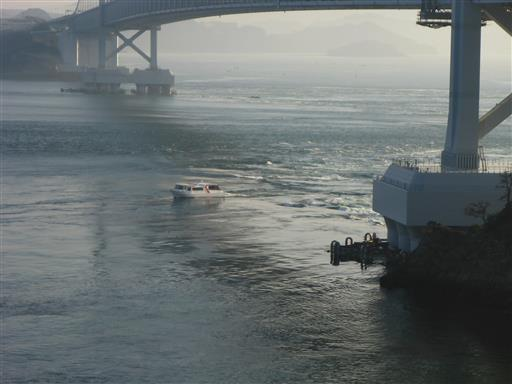
現在8:50だがもうゲートが開いている。
早めに開けるのなら、そうと言って欲しかった。
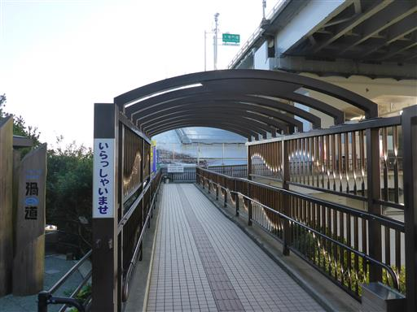
渦の道に入場。チケット売場はこの先だ。
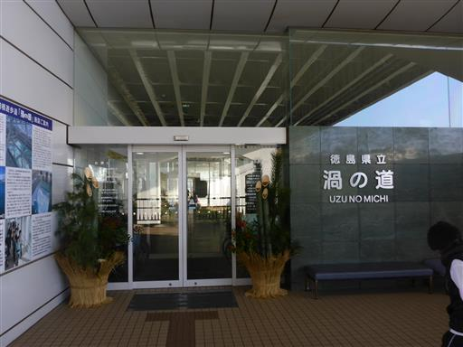
渦の道は大鳴門橋の下部に付けられた延長450mの遊歩道だ。
先まで行くと真上から渦潮を見学することができる。
遊覧船よりも手軽に利用できるのが良い。
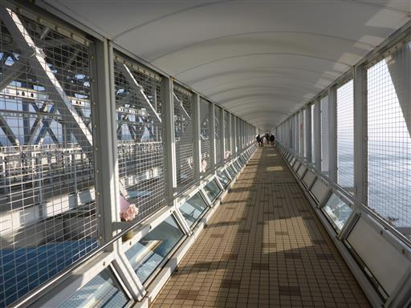
足元の窓から海を眺められる。
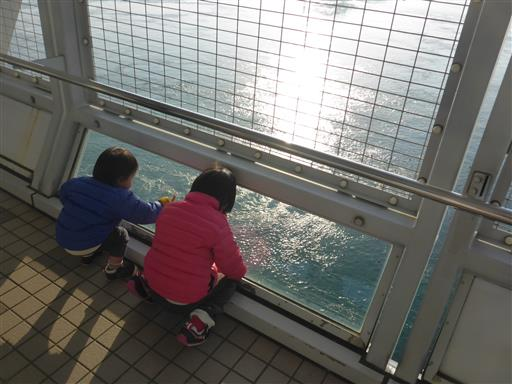
所々、床もガラス張りになっている。
下に見える海ははるか下方で、なかなかスリルがある。
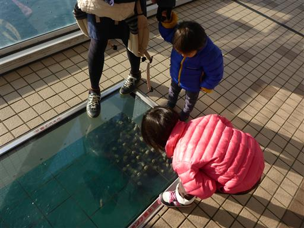
まるで川のように海の水が流れている。
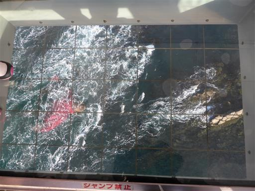
海の中に見えているのは飛島。灯台がポツリと建っている。
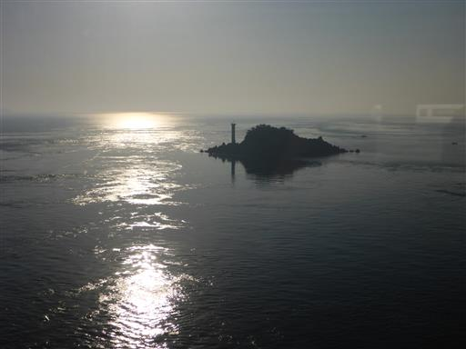
吊橋の主塔の部分は遊歩道がコの字型になっている。
大鳴門橋の下部は橋が造られた当初、電車を通す計画があった。
しかし、その計画がなくなって空いた空間に造られたのがこの遊歩道だ。
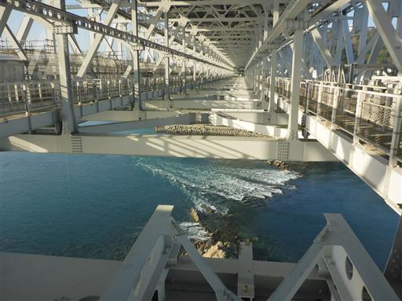
さらに先に進むと海の流れはさらに激しくなる。
渦潮よりもこの水の流れの激しさに驚く。
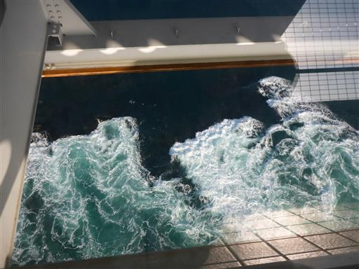
遊歩道の突き当りにある展望台に到着する。
足元のガラスの床とたくさんの窓から渦潮を見学できる。
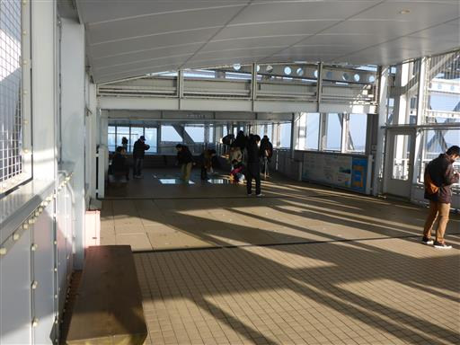
眼下の海を眺める。ところどころで渦潮ができては消えていく。
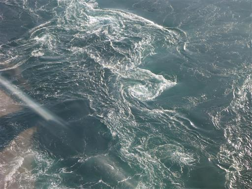
遊覧船がたくさんやって来ている。
流れは激しいが危険はないのだろうか？
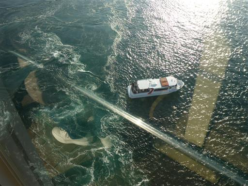
大潮の時期ではないため渦潮は小振りだ。
渦は数秒で消えてしまうため、なかなか撮影が難しい。
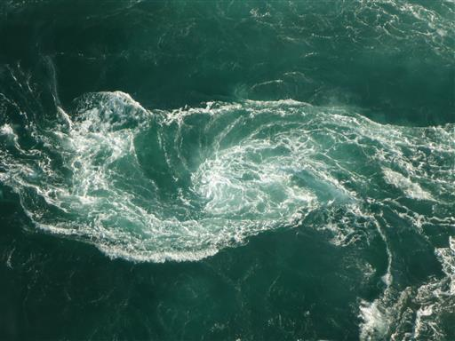
足元のガラスの床を覗くと、真下に遊覧船が見える。
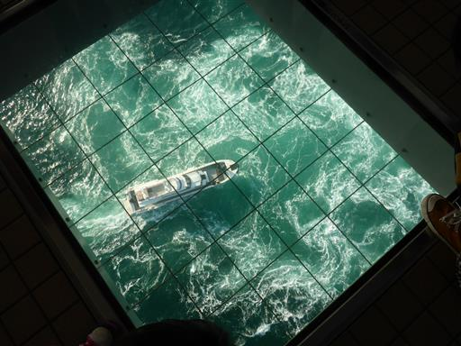
次々と形を変える海の姿は、いつまで見ていても飽きない。
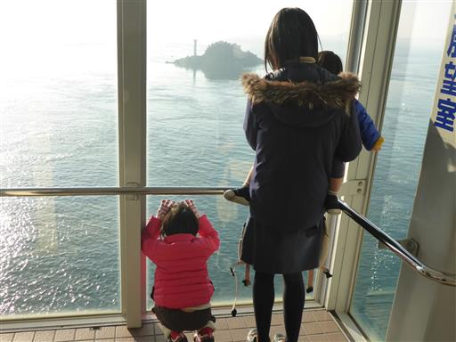
渦潮見学を終えたら、海岸に続く遊歩道を下って軽く散策する。
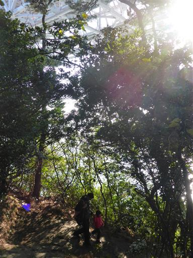
橋のすぐ下に到着。
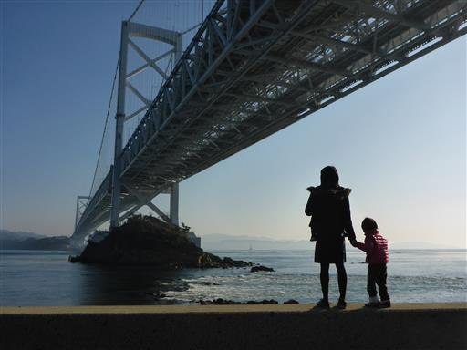
海はまだまだ流れ続けている。ここから見ても巨大な川のように見える。

大型の遊覧船。あれでは小回りが利かなさそうだ。
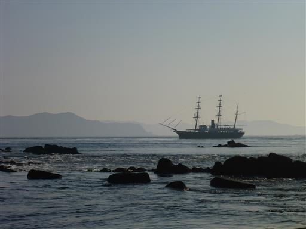
海に石を投げて遊ぶ。
自由に石を投げて良い場所などなかなか無いので、子供たちは喜んで遊んでいる。
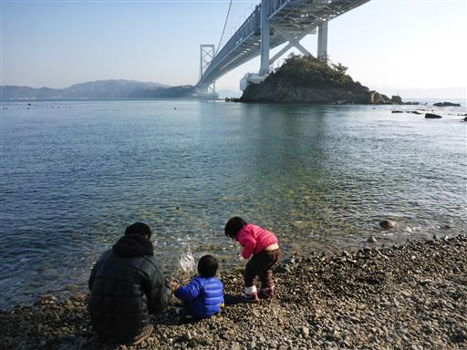
さらに半島の先端にある孫崎まで歩く。
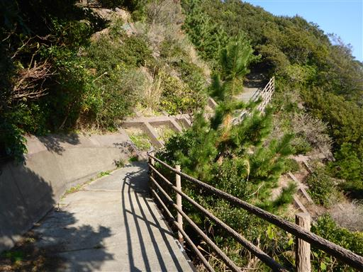
海の水が非常にきれいだ。旅行に行くと海の美しさに驚くことが多いが、
これが普通で関東の海が汚なすぎるだけなのかもしれない。
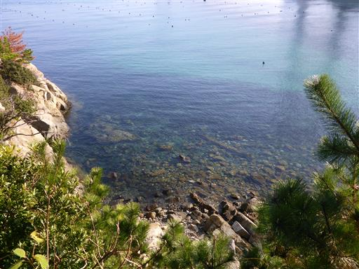
孫崎灯台に到着。四角い灯台だ。
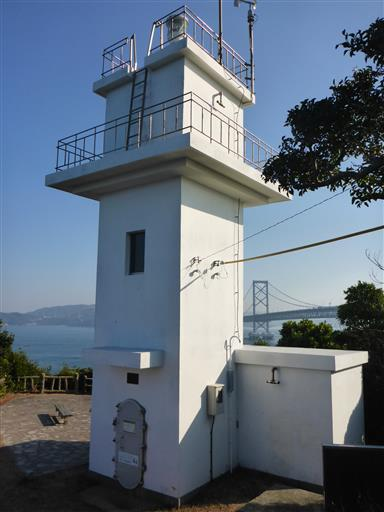
ここからの展望も素晴らしい。眼前に真青な海が広がる。
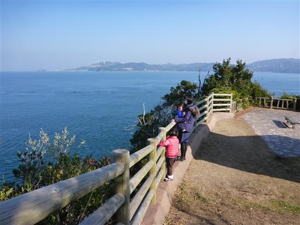
海には小さな船がたくさん浮かんでいる。釣りだろうか？
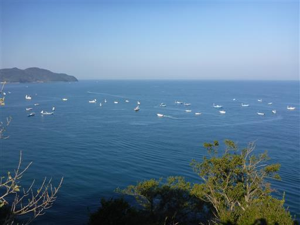
半島部をぐるっと一巡りして駐車場に戻る。
昼食は淡路島でとる予定だが、本日は大晦日で営業していない店が多い。
候補の4店に電話を掛けたが、どこも本日は休業だ。
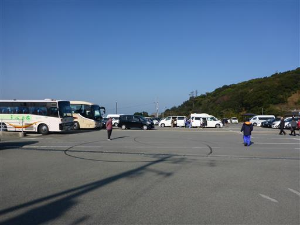
最終的に本日も営業していた道の駅うずしおで昼食をとる。
ここは、ご当地バーガーグランプリ日本一の「あわじ島オニオンビーフバーガー」が名物。
淡路島特産の玉ねぎが入ったハンバーガーだ。
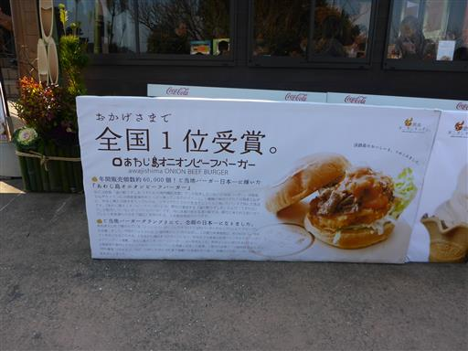
他の店が休業中だからか、かなりの混雑だ。
ハンバーガーは子供に食べさせにくいが、サイドメニュー中心に何とか食事を終える。
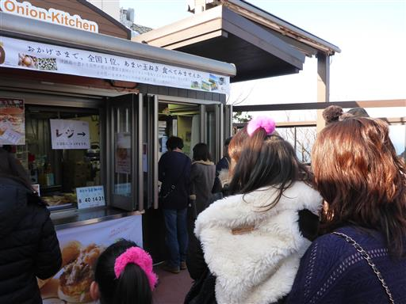
ここからも大鳴門橋がよく見える。
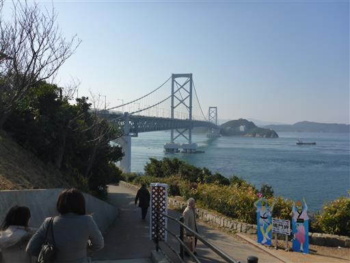
海の流れは朝と同じく左から右だ。
対岸の淡路島に渡っているため、潮の流れが反対向きになったようだ。
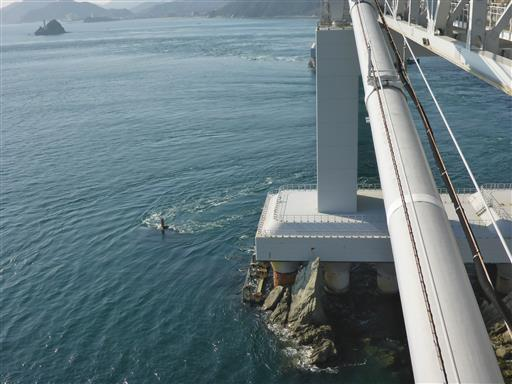
昼食をとったら帰省先の奈良に向かう。明石海峡大橋を渡って本州に移動する。
直前の天気予報は悪かったが、実際の天気はそこそこ良く、
昨年同様いろいろな観光地を回れて楽しい旅行となった。
また来年の旅行が楽しみだ。